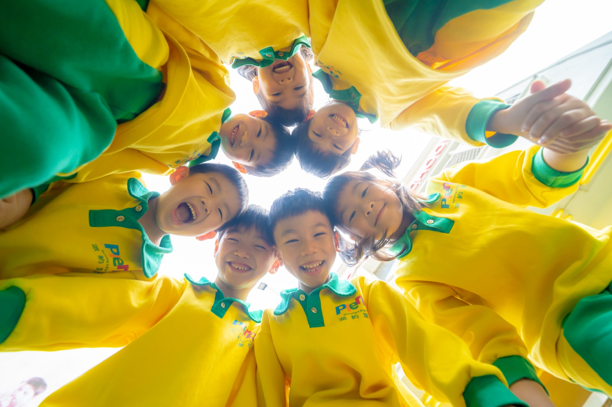
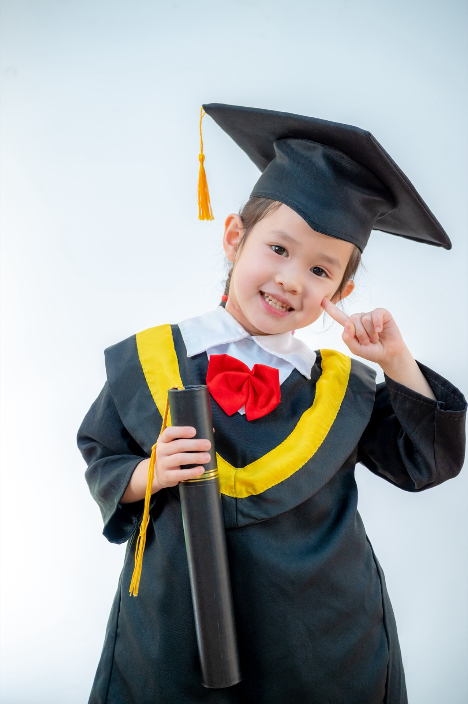

自然放鬆的笑容
在熟悉的校園環境裡，用聊天、玩耍、說故事的方式慢慢暖身，把孩子真正開心的表情留下來。

8-Ways 小巴老師攝影團隊｜幼兒園畢業照攝影
畢業照不只是證件用照片，而是一段孩子與同學、老師、家人的成長記憶。特別是幼兒園畢業照，更是許多孩子人生中的第一本畢業紀念冊。 小巴老師團隊以自然互動、故事感十足的方式規劃整天拍攝，讓學校在校園與附近公園，就能完成一套充滿笑容的畢業照。
我們主要服務幼兒園畢業照攝影，並延伸到音樂班與小學畢業班，從畢業照拍攝到畢業典禮全程記錄都能一站式完成。您可以先從下面兩個重點服務快速了解方向，再進一步閱讀方案、流程與畢業紀念冊說明：
以孩子最自然、開心的表情為主，讓畢業照不只是形式，而是一段真的很快樂的回憶。
在熟悉的校園環境裡，用聊天、玩耍、說故事的方式慢慢暖身，把孩子真正開心的表情留下來。
不是站好、看鏡頭而已，而是讓孩子一邊動一邊玩，在輕鬆的氛圍裡完成每一張學士服畢業照。

穿上自己喜歡的衣服，在教室或戶外草地裡，保留孩子此刻最真實的個性與笑容。

若學校有安排家庭照，也能在畢業這天留下爸爸媽媽一起陪伴的笑容與擁抱。

露營風道具組（建議個人便服照使用）
不只是個人獨照，也特別重視孩子與朋友、老師之間的互動與情感連結。
以下三張照片，大致代表我們在幼兒園畢業照拍攝中最常出現的畫面：個人學士服照、班級大合照，以及帶有故事感的戶外主題照。

先在簡單乾淨的背景完成學士服個人照，再搭配校園場景或戶外光線，幫每位畢業生留下正式又不呆板的形象照。
除了標準的大合照，我們也會安排更有互動感的站位與動作，讓同學之間的感情被好好收進相本裡。
像露營、野餐或校園一角，都可以變成畢業照的故事場景，小朋友在玩耍時自然流露的笑容，會成為最珍貴的回憶。
| 畢業影片微電影製作 | ＋ NT$8,800 |
| 木質隨身碟 | ＋ NT$380／人 |
| 豪華客製燙金證書夾（可客製名字） | ＋ NT$480 |
請提供以下內容，以便開立正式報價單：
📌 建議時程：拍攝到紀念冊完成約 2 個月
建議設置於戶外草地，搭配帳篷、野餐墊與乾燥花，色調自然清新。適合便服照或小組照使用，能呈現童趣與故事感。
可在教室內搭配白背景與學習教具，營造專屬畢業氛圍。
可結合學校 DIY 課程（烘焙、科學、美勞等），或安排畢業家庭照。拍攝時間約 15 分鐘／組，3–4 人一組。
🎬 更多作品與影片參考：台北蒙特梭利年度攝影作品（校內活動、露營、運動會、畢典、腳踏車活動）
在正式拍攝前，我們會與您確認：拍攝場地（室內／戶外）、小朋友服裝搭配與更換需求、拍攝人數與分組方式、小組照／個人照／大合照的時間安排。拍攝期間將保持聯繫，隨時討論確認細節，確保每一位小朋友都能有最自然、開心的拍攝體驗。
以活潑、互動、自然引導為主，特別重視孩子之間的情感互動與真實表情。在服裝變化、拍攝內容豐富度，以及相本頁數上，也都比一般同業更有彈性，能依照學校風格與您希望呈現的方式進行調整，所有細節都可以再一起討論與規劃。方案中也可加贈露營風道具，提供孩子在個人便服拍攝時使用，讓畫面更多元、也更有記憶點。
氣象會以當天降雨機率最高的時段顯示當日機率，實際上一天當中不會隨時都是最高機率（例如凌晨大雨、早上放晴，或夏天午後雷陣雨）。不必太擔心，時間近一點再討論即可。
若您方便的話，也非常歡迎我們約個時間通話討論，實際聊過後會更清楚，也能更精準地協助您規劃最適合的拍攝方式。
#幼兒園畢業照 #畢業照拍攝 #學士照 #大學畢業照 #幼兒園畢業典禮攝影 #畢業典禮攝影 #幼兒園攝影 #運動會攝影 #親子攝影 #家庭寫真 #兒童寫真
以下為常見的畢業照攝影方案與加購項目，實際報價仍會依學校人數與內容微調，歡迎加 Line 取得正式報價單。
所有方案皆由同一組專業團隊服務，包含事前溝通、拍攝當天執行與後製成品交付：
內容：個人學士服照、個人便服照、小組照、班級大合照（總共可換四套服裝）
成品：數位檔下載（無相本）
內容：個人學士服照、個人便服照、小組照、班級大合照（總共可換四套服裝）
成品：數位檔下載 + 畢業紀念冊
內容：學士服照、便服照、小組照、班級合照、工作照側拍、上課照側拍（總共可換六套服裝）
成品：數位檔下載 + 畢業紀念冊
內容：學士服照、便服照、小組照、班級大合照、工作照側拍、上課照側拍、畢業生家庭照、學生與老師合照（總共可換八套服裝）
成品：數位檔下載 + 畢業紀念冊
備註：每一項拍攝內容可選擇 1 個場景搭配 1 套服裝（並非單一拍攝項目可更換多套服裝）。例如方案一包含 4 種拍攝內容，最多可安排 4 個場景與 4 套服裝。
✔ 14 人（含）以下小班制班級
✔ 對畢冊有想法，希望拍攝安排更彈性、更有故事感，例如家庭照、校外教學、特色課程、露營。內容不限、服裝套數不限
費用：一日攝影費用 $18,800 + 畢業紀念冊 $780/本（最低製作數量 10 本）
成品：數位檔下載 + 畢業紀念冊
學校在索取正式報價單時，建議先提供以下資訊：
學校名稱與位置｜畢業生人數｜班級數每班幾位畢業生｜是否需影片｜是否需隨身碟
更多畢業照參考作品：iCloud 分享相簿｜台北蒙特梭利完整畢業年度攝影